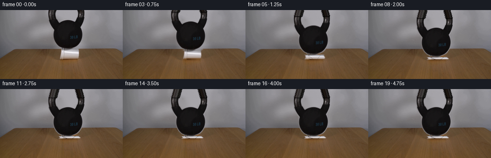
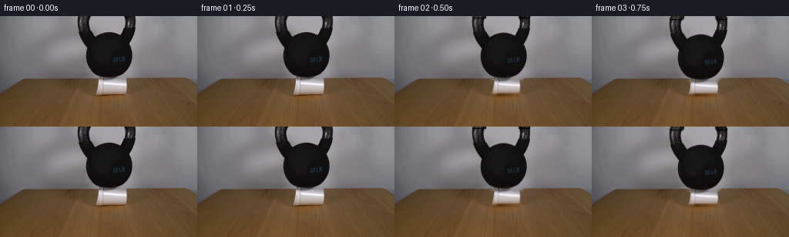

CODING AGENTS AS PIXEL WORLD MODELS
traex/GPT-5.6-Sol · 0191
点击播放 · 原生 RGB 像素
逐轮保存的候选
回放视频、检查图与代码变化。
每份候选均可单独播放。实际图片检查记录在下方工具轨迹中。
候选 01播放与检查图
点击播放 · 原生 RGB 像素


展开代码变化
--- 上一保存版本
+++ 本次保存版本
@@ -0,0 +1,199 @@
+"""Generate the locked-off kettlebell / foam-cup demonstration.
+
+The camera plate comes from first_frame.png. Foreground mattes are obtained only
+from its RGB values; the short motion is a deterministic, damped crushing motion.
+"""
+from pathlib import Path
+
+import cv2
+import numpy as np
+from PIL import Image
+
+from artifact_io import save
+
+ROOT = Path(__file__).resolve().parent
+H, W = 144, 256
+
+
+def largest_component(binary, seed_region=None):
+ n, labels, stats, _ = cv2.connectedComponentsWithStats(binary.astype(np.uint8), 8)
+ if n <= 1:
+ return binary.astype(np.uint8)
+ candidates = range(1, n)
+ if seed_region is not None:
+ x0, y0, x1, y1 = seed_region
+ hits = [(np.count_nonzero(labels[y0:y1, x0:x1] == i), i) for i in candidates]
+ idx = max(hits)[1]
+ else:
+ idx = 1 + np.argmax(stats[1:, cv2.CC_STAT_AREA])
+ return (labels == idx).astype(np.uint8)
+
+
+def over(dst, rgb, alpha):
+ """Alpha composite float RGB and alpha onto a uint8/float RGB plate."""
+ a = np.clip(alpha, 0.0, 1.0)[..., None]
+ return dst * (1.0 - a) + rgb.astype(np.float32) * a
+
+
+def shifted(layer, amount):
+ m = np.float32([[1, 0, 0], [0, 1, amount]])
+ return cv2.warpAffine(layer, m, (W, H), flags=cv2.INTER_LINEAR,
+ borderMode=cv2.BORDER_CONSTANT, borderValue=0)
+
+
+def build_assets(first):
+ f = first.astype(np.float32)
+ lum = f.mean(axis=2)
+
+ # The iron is the single very dark connected object above the tabletop.
+ candidate = np.zeros((H, W), np.uint8)
+ candidate[:81, 88:191] = (lum[:81, 88:191] < 83).astype(np.uint8)
+ bell_core = largest_component(candidate, (125, 35, 155, 65))
+ bell_mask = cv2.dilate(bell_core, np.ones((3, 3), np.uint8), iterations=1)
+ bell_alpha = cv2.GaussianBlur(bell_mask.astype(np.float32), (3, 3), .55)
+ # Keep the mask from taking in the dark tabletop at the horizon.
+ bell_alpha[82:] = 0
+ bell_rgb = f.copy()
+
+ # Matte the neutral white/gray cup against the warm brown tabletop.
+ r, g, b = f[..., 0], f[..., 1], f[..., 2]
+ cup_core = np.zeros((H, W), np.uint8)
+ neutral = (np.abs(r - g) + np.abs(g - b) < 48)
+ pale = (lum > 84) & ((r - b) < 38)
+ cup_core[81:104, 123:168] = (neutral & pale)[81:104, 123:168]
+ cup_core = largest_component(cup_core, (135, 85, 157, 98))
+ cup_core = cv2.morphologyEx(cup_core, cv2.MORPH_CLOSE, np.ones((3, 3), np.uint8))
+ cup_alpha = cv2.GaussianBlur(cv2.dilate(cup_core, np.ones((3, 3), np.uint8), 1).astype(np.float32),
+ (3, 3), .55)
+ cup_alpha[:80] = 0
+ cup_alpha[105:] = 0
+
+ # A clean locked camera plate. Only pixels hidden in frame zero are filled.
+ erase = ((bell_alpha > .03) | (cup_alpha > .03)).astype(np.uint8) * 255
+ erase = cv2.dilate(erase, np.ones((3, 3), np.uint8), 1)
+ plate = cv2.inpaint(first[:, :, ::-1], erase, 5, cv2.INPAINT_TELEA)[:, :, ::-1].astype(np.float32)
+
+ # Source crop used as a deformable cup shell.
+ box = (122, 80, 169, 105)
+ x0, y0, x1, y1 = box
+ cup_crop = f[y0:y1, x0:x1].copy()
+ cup_a_crop = cup_alpha[y0:y1, x0:x1].copy()
+ return plate, bell_rgb, bell_alpha, cup_crop, cup_a_crop, box, bell_core
+
+
+def draw_shadow(frame, compression):
+ yy, xx = np.mgrid[:H, :W]
+ # Contact shadow grows denser and slightly wider as the cup folds flat.
+ sx = 25.0 + 5.0 * compression
+ sy = 3.3 + 1.1 * compression
+ shadow = np.exp(-(((xx - 145.0) / sx) ** 2 + ((yy - 103.0) / sy) ** 2) * 2.0)
+ shadow *= (0.12 + 0.09 * compression)
+ shadow *= (yy >= 96)
+ return frame * (1.0 - shadow[..., None])
+
+
+def render_cup(frame, crop, alpha, box, compression):
+ x0, y0, x1, y1 = box
+ # The bottom stays planted. The shell shortens and bulges out sideways.
+ src_h, src_w = alpha.shape
+ height = max(5, int(round(23 - 17 * compression)))
+ width = int(round(43 + 10 * compression))
+ rgb = cv2.resize(crop, (width, height), interpolation=cv2.INTER_AREA)
+ aa = cv2.resize(alpha, (width, height), interpolation=cv2.INTER_AREA)
+
+ # Progressive asymmetric buckling rather than a perfectly affine squash.
+ if compression > .16:
+ amp = 2.5 * compression
+ mapx, mapy = np.meshgrid(np.arange(width, dtype=np.float32),
+ np.arange(height, dtype=np.float32))
+ phase = (mapy / max(height - 1, 1)) * 5.2
+ mapx = mapx + amp * np.sin(phase + .65) * (1.0 - mapy / max(height, 1))
+ rgb = cv2.remap(rgb, mapx, mapy, cv2.INTER_LINEAR, borderMode=cv2.BORDER_REFLECT)
+ aa = cv2.remap(aa, mapx, mapy, cv2.INTER_LINEAR, borderMode=cv2.BORDER_CONSTANT)
+
+ left = int(round(145.5 - width / 2))
+ bottom = 104
+ top = bottom - height
+ canvas_rgb = np.zeros((H, W, 3), np.float32)
+ canvas_a = np.zeros((H, W), np.float32)
+ xa, xb = max(0, left), min(W, left + width)
+ ya, yb = max(0, top), min(H, bottom)
+ if xa < xb and ya < yb:
+ canvas_rgb[ya:yb, xa:xb] = rgb[ya-top:yb-top, xa-left:xb-left]
+ canvas_a[ya:yb, xa:xb] = aa[ya-top:yb-top, xa-left:xb-left]
+
+ # Creases emerge in the collapsed foam. They are clipped to the cup matte.
+ if compression > .35:
+ crease = np.zeros((H, W), np.float32)
+ strength = (compression - .35) / .65
+ cv2.line(crease, (left + int(width*.22), top + 1),
+ (left + int(width*.42), bottom - 1), .42 * strength, 1, cv2.LINE_AA)
+ cv2.line(crease, (left + int(width*.72), top),
+ (left + int(width*.59), bottom - 1), .32 * strength, 1, cv2.LINE_AA)
+ canvas_rgb *= (1.0 - (crease * canvas_a)[..., None])
+
+ return over(frame, canvas_rgb, canvas_a), canvas_a
+
+
+def extrapolated_handle(first, bell_core, drop):
+ """Reveal the previously out-of-frame continuation of the handle as it drops."""
+ rgb = np.zeros((H, W, 3), np.float32)
+ a = np.zeros((H, W), np.float32)
+ n = int(np.ceil(max(0.0, drop))) + 1
+ rowmask = bell_core[0].astype(bool)
+ # Runs at the upper edge are the two upright sides of the handle.
+ ids = np.flatnonzero(rowmask)
+ if not len(ids):
+ return rgb, a
+ splits = np.split(ids, np.flatnonzero(np.diff(ids) > 1) + 1)
+ for y in range(min(n, H)):
+ k = max(0.0, drop - y)
+ for run in splits:
+ if not len(run):
+ continue
+ center = run.mean()
+ inward = (1 if center < 140 else -1) * int(round(.28 * k))
+ for sx in run:
+ dx = sx + inward
+ if 0 <= dx < W:
+ rgb[y, dx] = first[0, sx]
+ a[y, dx] = 1.0
+ a = cv2.GaussianBlur(cv2.dilate(a, np.ones((2, 2), np.uint8)), (3, 3), .5)
+ return rgb, a
+
+
+def main():
+ first = np.asarray(Image.open(ROOT / "first_frame.png").convert("RGB"), dtype=np.uint8)
+ assert first.shape == (H, W, 3)
+ plate, bell_rgb, bell_a, cup, cup_a, box, bell_core = build_assets(first)
+
+ # Irreversible shell compression plus a very small damped rebound of the mass.
+ compression = [0, 0, .04, .17, .40, .68, .88, 1.0, 1.0, 1.0,
+ 1.0, 1.0, 1.0, 1.0, 1.0, 1.0, 1.0, 1.0, 1.0, 1.0]
+ descent = [0, 0, .7, 2.8, 6.7, 11.3, 15.0, 17.2, 15.9, 17.0,
+ 16.5, 16.9, 16.7, 16.82, 16.75, 16.79, 16.77, 16.78, 16.78, 16.78]
+
+ frames = [first.copy()]
+ for i in range(1, 20):
+ if i == 1:
+ frames.append(first.copy())
+ continue
+ c, d = compression[i], descent[i]
+ frame = draw_shadow(plate.copy(), c)
+ frame, _ = render_cup(frame, cup, cup_a, box, c)
+
+ moved_rgb = shifted(bell_rgb, d)
+ moved_a = shifted(bell_a, d)
+ frame = over(frame, moved_rgb, moved_a)
+ top_rgb, top_a = extrapolated_handle(first.astype(np.float32), bell_core, d)
+ frame = over(frame, top_rgb, top_a)
+ frames.append(np.clip(np.rint(frame), 0, 255).astype(np.uint8))
+
+ out = np.stack(frames, axis=0)
+ assert out.shape == (20, 144, 256, 3) and out.dtype == np.uint8
+ assert np.array_equal(out[0], first)
+ save(out, ROOT)
+
+
+if __name__ == "__main__":
+ main()
可观测工具轨迹
实际执行的命令与返回图片。
命令 1exit 0
/bin/bash -lc "ls -la && printf '\\n--- GENERATION_RULES.md ---\\n' && cat GENERATION_RULES.md && printf '\\n--- prompt.txt ---\\n' && cat prompt.txt && printf '\\n--- files ---\\n' && find . -maxdepth 2 -type f -printf '%p\\n' | sort"
命令 2exit 0
/bin/bash -lc "python3 - <<'PY'
from PIL import Image
import numpy as np
im=np.array(Image.open('first_frame.png').convert('RGB'))
print(im.shape, im.min(), im.max(), im.mean((0,1)), im.std((0,1)))
# sample center points 16x9
for y in np.linspace(0,143,9).astype(int):
print(y, ['#%02x%02x%02x'%tuple(im[y,x]) for x in np.linspace(0,255,16).astype(int)])
PY"命令 3exit 0
/bin/bash -lc "python3 - <<'PY'
from PIL import Image
import numpy as np
im=np.array(Image.open('first_frame.png').convert('RGB'))
# print grayscale at 2x2 blocks ascii
G=im.mean(2)
chars=' .,:;irsXA253hMHGS#9B&@'
for by in range(0,144,3):
s=''
for bx in range(0,256,3):
v=G[by:by+3,bx:bx+3].mean()
s+=chars[min(len(chars)-1,int(v/256*len(chars)))]
print(s)
PY"命令 4exit 0
/bin/bash -lc "python3 - <<'PY'
from PIL import Image
import numpy as np
I=np.array(Image.open('first_frame.png').convert('RGB')); lum=I.mean(2)
for y in range(0,115,3):
for typ,m in [('D',lum[y]<50),('B',lum[y]>180)]:
runs=[];on=False
for x,v in enumerate(m):
if v and not on: s=x;on=True
if on and (not v or x==255):
e=x-1 if not v else x
if e-s>=2:runs.append((s,e))
on=False
if runs: print(f'{y:3}{typ}',runs)
PY"命令 5exit 0
/bin/bash -lc "python3 - <<'PY'
from PIL import Image
import numpy as np
I=np.array(Image.open('first_frame.png').convert('RGB'))
for y in range(70,112):
print('\\ny',y)
for a,b in [(95,125),(120,170),(165,190)]:
vals=[]
for x in range(a,b,2):
c=I[y,x]; vals.append('%3d'%round(c.mean()))
print(a, ' '.join(vals))
PY"命令 6exit 0
/bin/bash -lc "python3 - <<'PY'
import cv2,numpy as np
from PIL import Image
I=np.array(Image.open('first_frame.png').convert('RGB')); L=I.mean(2)
for th in [45,60,75,90,105]:
b=((L<th)&(np.indices(L.shape)[0]<82)).astype('uint8')
n, lab, stats, cen=cv2.connectedComponentsWithStats(b,8)
comps=[]
for i in range(1,n):
x,y,w,h,a=stats[i];
if 90<x<180 and a>5: comps.append((a,x,y,w,h))
print(th,sorted(comps,reverse=True)[:10])
PY"命令 7exit 0
/bin/bash -lc "sed -n '1,240p' artifact_io.py && python3 - <<'PY'
import cv2
print('cv2',cv2.__version__)
PY"命令 8exit 0
/bin/bash -lc "cat > generate.py <<'PY'
\"\"\"Generate the locked-off kettlebell / foam-cup demonstration.
The camera plate comes from first_frame.png. Foreground mattes are obtained only
from its RGB values; the short motion is a deterministic, damped crushing motion.
\"\"\"
from pathlib import Path
import cv2
import numpy as np
from PIL import Image
from artifact_io import save
ROOT = Path(__file__).resolve().parent
H, W = 144, 256
def largest_component(binary, seed_region=None):
n, labels, stats, _ = cv2.connectedComponentsWithStats(binary.astype(np.uint8), 8)
if n <= 1:
return binary.astype(np.uint8)
candidates = range(1, n)
if seed_region is not None:
x0, y0, x1, y1 = seed_region
hits = [(np.count_nonzero(labels[y0:y1, x0:x1] == i), i) for i in candidates]
idx = max(hits)[1]
else:
idx = 1 + np.argmax(stats[1:, cv2.CC_STAT_AREA])
return (labels == idx).astype(np.uint8)
def over(dst, rgb, alpha):
\"\"\"Alpha composite float RGB and alpha onto a uint8/float RGB plate.\"\"\"
a = np.clip(alpha, 0.0, 1.0)[..., None]
return dst * (1.0 - a) + rgb.astype(np.float32) * a
def shifted(layer, amount):
m = np.float32([[1, 0, 0], [0, 1, amount]])
return cv2.warpAffine(layer, m, (W, H), flags=cv2.INTER_LINEAR,
borderMode=cv2.BORDER_CONSTANT, borderValue=0)
def build_assets(first):
f = first.astype(np.float32)
lum = f.mean(axis=2)
# The iron is the single very dark connected object above the tabletop.
candidate = np.zeros((H, W), np.uint8)
candidate[:81, 88:191] = (lum[:81, 88:191] < 83).astype(np.uint8)
bell_core = largest_component(candidate, (125, 35, 155, 65))
bell_mask = cv2.dilate(bell_core, np.ones((3, 3), np.uint8), iterations=1)
bell_alpha = cv2.GaussianBlur(bell_mask.astype(np.float32), (3, 3), .55)
# Keep the mask from taking in the dark tabletop at the horizon.
bell_alpha[82:] = 0
bell_rgb = f.copy()
# Matte the neutral white/gray cup against the warm brown tabletop.
r, g, b = f[..., 0], f[..., 1], f[..., 2]
cup_core = np.zeros((H, W), np.uint8)
neutral = (np.abs(r - g) + np.abs(g - b) < 48)
pale = (lum > 84) & ((r - b) < 38)
cup_core[81:104, 123:168] = (neutral & pale)[81:104, 123:168]
cup_core = largest_component(cup_core, (135, 85, 157, 98))
cup_core = cv2.morphologyEx(cup_core, cv2.MORPH_CLOSE, np.ones((3, 3), np.uint8))
cup_alpha = cv2.GaussianBlur(cv2.dilate(cup_core, np.ones((3, 3), np.uint8), 1).astype(np.float32),
(3, 3), .55)
cup_alpha[:80] = 0
cup_alpha[105:] = 0
# A clean locked camera plate. Only pixels hidden in frame zero are filled.
erase = ((bell_alpha > .03) | (cup_alpha > .03)).astype(np.uint8) * 255
erase = cv2.dilate(erase, np.ones((3, 3), np.uint8), 1)
plate = cv2.inpaint(first[:, :, ::-1], erase, 5, cv2.INPAINT_TELEA)[:, :, ::-1].astype(np.float32)
# Source crop used as a deformable cup shell.
box = (122, 80, 169, 105)
x0, y0, x1, y1 = box
cup_crop = f[y0:y1, x0:x1].copy()
cup_a_crop = cup_alpha[y0:y1, x0:x1].copy()
return plate, bell_rgb, bell_alpha, cup_crop, cup_a_crop, box, bell_core
def draw_shadow(frame, compression):
yy, xx = np.mgrid[:H, :W]
# Contact shadow grows denser and slightly wider as the cup folds flat.
sx = 25.0 + 5.0 * compression
sy = 3.3 + 1.1 * compression
shadow = np.exp(-(((xx - 145.0) / sx) ** 2 + ((yy - 103.0) / sy) ** 2) * 2.0)
shadow *= (0.12 + 0.09 * compression)
shadow *= (yy >= 96)
return frame * (1.0 - shadow[..., None])
def render_cup(frame, crop, alpha, box, compression):
x0, y0, x1, y1 = box
# The bottom stays planted. The shell shortens and bulges out sideways.
src_h, src_w = alpha.shape
height = max(5, int(round(23 - 17 * compression)))
width = int(round(43 + 10 * compression))
rgb = cv2.resize(crop, (width, height), interpolation=cv2.INTER_AREA)
aa = cv2.resize(alpha, (width, height), interpolation=cv2.INTER_AREA)
# Progressive asymmetric buckling rather than a perfectly affine squash.
if compression > .16:
amp = 2.5 * compression
mapx, mapy = np.meshgrid(np.arange(width, dtype=np.float32),
np.arange(height, dtype=np.float32))
phase = (mapy / max(height - 1, 1)) * 5.2
mapx = mapx + amp * np.sin(phase + .65) * (1.0 - mapy / max(height, 1))
rgb = cv2.remap(rgb, mapx, mapy, cv2.INTER_LINEAR, borderMode=cv2.BORDER_REFLECT)
aa = cv2.remap(aa, mapx, mapy, cv2.INTER_LINEAR, borderMode=cv2.BORDER_CONSTANT)
left = int(round(145.5 - width / 2))
bottom = 104
top = bottom - height
canvas_rgb = np.zeros((H, W, 3), np.float32)
canvas_a = np.zeros((H, W), np.float32)
xa, xb = max(0, left), min(W, left + width)
ya, yb = max(0, top), min(H, bottom)
if xa < xb and ya < yb:
canvas_rgb[ya:yb, xa:xb] = rgb[ya-top:yb-top, xa-left:xb-left]
canvas_a[ya:yb, xa:xb] = aa[ya-top:yb-top, xa-left:xb-left]
# Creases emerge in the collapsed foam. They are clipped to the cup matte.
if compression > .35:
crease = np.zeros((H, W), np.float32)
strength = (compression - .35) / .65
cv2.line(crease, (left + int(width*.22), top + 1),
(left + int(width*.42), bottom - 1), .42 * strength, 1, cv2.LINE_AA)
cv2.line(crease, (left + int(width*.72), top),
(left + int(width*.59), bottom - 1), .32 * strength, 1, cv2.LINE_AA)
canvas_rgb *= (1.0 - (crease * canvas_a)[..., None])
return over(frame, canvas_rgb, canvas_a), canvas_a
def extrapolated_handle(first, bell_core, drop):
\"\"\"Reveal the previously out-of-frame continuation of the handle as it drops.\"\"\"
rgb = np.zeros((H, W, 3), np.float32)
a = np.zeros((H, W), np.float32)
n = int(np.ceil(max(0.0, drop))) + 1
rowmask = bell_core[0].astype(bool)
# Runs at the upper edge are the two upright sides of the handle.
ids = np.flatnonzero(rowmask)
if not len(ids):
return rgb, a
splits = np.split(ids, np.flatnonzero(np.diff(ids) > 1) + 1)
for y in range(min(n, H)):
k = max(0.0, drop - y)
for run in splits:
if not len(run):
continue
center = run.mean()
inward = (1 if center < 140 else -1) * int(round(.28 * k))
for sx in run:
dx = sx + inward
if 0 <= dx < W:
rgb[y, dx] = first[0, sx]
a[y, dx] = 1.0
a = cv2.GaussianBlur(cv2.dilate(a, np.ones((2, 2), np.uint8)), (3, 3), .5)
return rgb, a
def main():
first = np.asarray(Image.open(ROOT / \"first_frame.png\").convert(\"RGB\"), dtype=np.uint8)
assert first.shape == (H, W, 3)
plate, bell_rgb, bell_a, cup, cup_a, box, bell_core = build_assets(first)
# Irreversible shell compression plus a very small damped rebound of the mass.
compression = [0, 0, .04, .17, .40, .68, .88, 1.0, 1.0, 1.0,
1.0, 1.0, 1.0, 1.0, 1.0, 1.0, 1.0, 1.0, 1.0, 1.0]
descent = [0, 0, .7, 2.8, 6.7, 11.3, 15.0, 17.2, 15.9, 17.0,
16.5, 16.9, 16.7, 16.82, 16.75, 16.79, 16.77, 16.78, 16.78, 16.78]
frames = [first.copy()]
for i in range(1, 20):
if i == 1:
frames.append(first.copy())
continue
c, d = compression[i], descent[i]
frame = draw_shadow(plate.copy(), c)
frame, _ = render_cup(frame, cup, cup_a, box, c)
moved_rgb = shifted(bell_rgb, d)
moved_a = shifted(bell_a, d)
frame = over(frame, moved_rgb, moved_a)
top_rgb, top_a = extrapolated_handle(first.astype(np.float32), bell_core, d)
frame = over(frame, top_rgb, top_a)
frames.append(np.clip(np.rint(frame), 0, 255).astype(np.uint8))
out = np.stack(frames, axis=0)
assert out.shape == (20, 144, 256, 3) and out.dtype == np.uint8
assert np.array_equal(out[0], first)
save(out, ROOT)
if __name__ == \"__main__\":
main()
PY
python3 generate.py
python3 - <<'PY'
from PIL import Image
import numpy as np
z=np.load('pixels.npz')['pixels']
f=np.stack([((z>>16)&255),((z>>8)&255),(z&255)],-1).transpose(2,0,1,3).astype('uint8')
a=np.array(Image.open('first_frame.png').convert('RGB'))
print('shape',f.shape,'dtype',f.dtype,'frame0 exact',np.array_equal(f[0],a))
for i in range(20):
print(i, 'changed',np.count_nonzero(np.any(f[i]"'!=a,2)), '"'dark y<110',np.count_nonzero(f[i,:110].mean(2)<50))
PY
ls -lh pixels.npz inspection.png index.html frames/19.png"命令 9exit 0
/bin/bash -lc "python3 - <<'PY'
from PIL import Image
import numpy as np
for fn in ['frames/00.png','frames/04.png','frames/07.png','frames/19.png']:
I=np.array(Image.open(fn)); G=I.mean(2); chars=' .,:;irsXA253hMHGS#9B&@'
print('\\n',fn)
for by in range(0,120,3):
s=''
for bx in range(75,210,3):
v=G[by:by+3,bx:bx+3].mean();s+=chars[min(len(chars)-1,int(v/256*len(chars)))]
print(s)
PY"保存候选 1 份；完成命令 9 次；可验证图片返回 0 张。原始 API 响应与完整日志保留在本地。